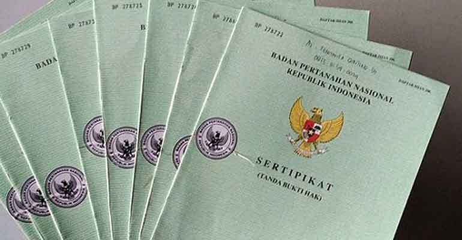
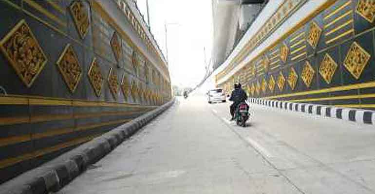

Rekayasa Lalu Lintas Selama Pasar Malam Perayaan Sekaten #PMPS2017
Dinas Perhubungan Kota Jogja akan merekayasa lalu lintas selama pelaksanaan Pasar Malam Perayaan Sekaten (PMPS) pada 10-30 November mendatang di Alun-alun Utara (Altar) agar tidak menimbulkan kepadatan di beberapa ruas jalan menuju Altar.
See More ...

160.000 Sertifikat Akan Diberikan Secara Cuma-Cuma kepada Warga DIY
Pemerintah Pusat pada 2018 berencana memberikan 160.000 sertifikat tanah lengkap secara cuma-cuma kepada pemilik lahan di DIY. Pemberian sertifikat tersebut dinilai penting karena akan memberikan kepastian bagi masyarakat.
See More ...

Sempat Tertunda, Underpass Kentungan Bakal Segera Dibangun
Pemerintah Pusat akhirnya akan memulai kembali rencana pembangunan underpass Kentungan yang selama memang menjadi salah satu titik paling macet di DIY. Ditargetkan, pada akhir 2019, jalan tersebut sudah bisa beroperasi.
See More ...